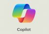

Descrição
Este é um monólogo fictício como se Allan Turing voltasse a Terra e visse no que os primeiros passos dados por ele se transformaram. A impressão dele sobre as IAs e a influência delas na sociedade
Tecnologias Utilizadas

IA Generativa Microsoft Copilot para roteirização e revisão

IA Generativa ElevenLabs para sintetização de voz
Resultados
O monólogo traz uma reflexão otimista, porém responsável sobre o atual momento histórico e evolutivo...